Modern businesses need modern data strategies, built on platforms that support agility, growth and operational efficiency.
Snowflake is the Data Cloud, a future-proof solution that simplifies data pipelines, so you can focus on data and analytics instead of infrastructure management.
dbt is a transformation workflow that lets teams quickly and collaboratively deploy analytics code following software engineering best practices like modularity, portability, CI/CD, and documentation. Now anyone who knows SQL can build production-grade data pipelines. It transforms data in the warehouse, leveraging cloud data platforms like Snowflake.
In this Quickstart, you will follow a step-by-step guide to using dbt with Snowflake, and see some of the benefits this tandem brings.
Let's get started.
What You'll Use During the Lab
- A trial Snowflake account with
ACCOUNTADMINaccess - A dbt Cloud account
What You'll Learn
- How to build scalable data transformation pipelines using dbt & Snowflake
- How to leverage data in Snowflake's Data Marketplace
What You'll Build
- A set of data analytics pipelines for Financial Services data leveraging dbt and Snowflake, making use of best practices like data quality tests and code promotion between environments
In this lab, we are going to analyze the historical trading performance of a company that has trading desks spread across different regions. As inputs, we are going to leverage datasets available in Knoema Economy Data Atlas, which is available in Snowflake Marketplace. We'll also make use of a few manual uploads. To do this, we are going to set up the environments, build scalable pipelines in dbt, establish data tests , and promote code to production.

Just to give you a sneak peek, this is the data lineage we will be creating using dbt.
Stay tuned!

- Login to your Snowflake trial account.

- UI Tour (SE will walk through this live). For post-workshop participants, click here for a quick tour of the UI.
We will be using the new UI to getting started but you can also switch over to the Classic Console if you would like. It will not affect your dbt experience but may change where the buttons are in the Snowflake UI.
New UI: 
Classic UI:

If you ever want to change from the new UI to the classic one, click on the home button and then Classic Console
Now we need to obtain our raw data. We are going to the Snowflake Marketplace to connect to the Knoema dataset.
- We want to go into the Snowflake Marketplace to connect to the Knoema dataset. Click on Data on the left hand sidebar and then Marketplace.

- Now let's look for Knoema Economy Atlas Data. Type into the "Search Data Marketplace" search bar "Knoema Economy Atlas Data". Find the Knoema Economy Atlas Data tile in the results. Once you find it, click on it.

- You should now on a page with a description of the data, sample queries, and other useful information. Let's get this data into our Snowflake account. Click the "Get Data" button.

- In the pop-up, enter "KNOEMA_ECONOMY_DATA_ATLAS" as the database name and click "Get Data". Do not forget to update the name of the database or you will have update some code down the line.

So what is happening here? Knoema has granted access to this data from their Snowflake account to yours. You're creating a new database in your account for this data to live - but the best part is that no data is going to move between accounts! When you query, you'll really be querying the data that lives in the Knoema account. If they change the data, you'll automatically see those changes. No need to define schemas, move data, or create a data pipeline either.
- Click on Query Data.

- Now let's look at the new data. On the left hand sidebar, you should see KNOEMA_ECONOMY_DATA_ATLAS listed as a database. If not, refresh the UI and check again.
- Now let's try to query the data. If you want to switch back to the original interface, you can click on the home button on the top left and then
Classic Consoleon the bottom of the left hand sidebar. This will port you back where you can see the database displayed the way it was before.
The Economy Atlas comes with more than 300 datasets. In order to improve navigation, the data provider has kindly supplied a table called DATASETS. Let's go ahead and find the ones related to the stock history and currency exchange rates that we are going to use in the next step.
- Remove the code in the worksheet and paste in this code.
select *
from "KNOEMA_ECONOMY_DATA_ATLAS"."ECONOMY"."DATASETS"
where "DatasetName" ILIKE 'US Stock%'
OR "DatasetName" ILIKE 'Exchange%Rates%';

- Now we can see what our datasets names are, let's try to query one of the datasets:
select *
from KNOEMA_ECONOMY_DATA_ATLAS.ECONOMY.USINDSSP2020
where "Date" = '2020-02-03';

Congratulations! You successfully tapped into a live data feed of Trade and FX rates data with NO ETL involved. Isn't this cool? Now let's start building our pipelines.
Now it's time to set up dbt. We are going to be using Snowflake Partner Connect to set up your dbt Cloud account and project. Using this method will allow you to spin up a fully fledged dbt account with your Snowflake connection, managed repository, environments, and credentials in minutes.
- In the Snowflake UI, click on the home icon on the top left side. To access Partner Connect, click on your user and then Partner Connect. Make sure you're still set as the ACCOUNTADMIN role.
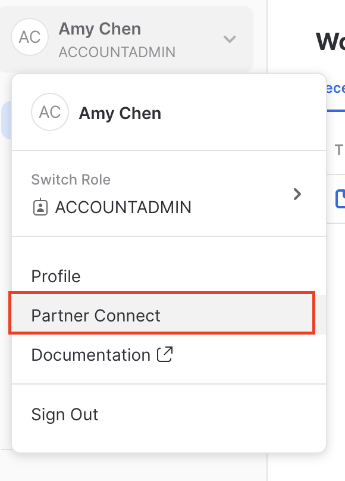
If you're using the classic console, it will be on the top right. 
- Find the dbt Tile by typing into the "Search Partner Connect" search bar. Click on the dbt tile.
- You should now see a popup that says
Connect to dbt. Click onOptional Grantand you are going to add in the KNOEMA_ECONOMY_DATA_ATLAS database. This will grant access for your new dbt user role to the database. - Click on
Connect. This will create a dedicated dbt user, database, warehouse, and role for your dbt Cloud trial.
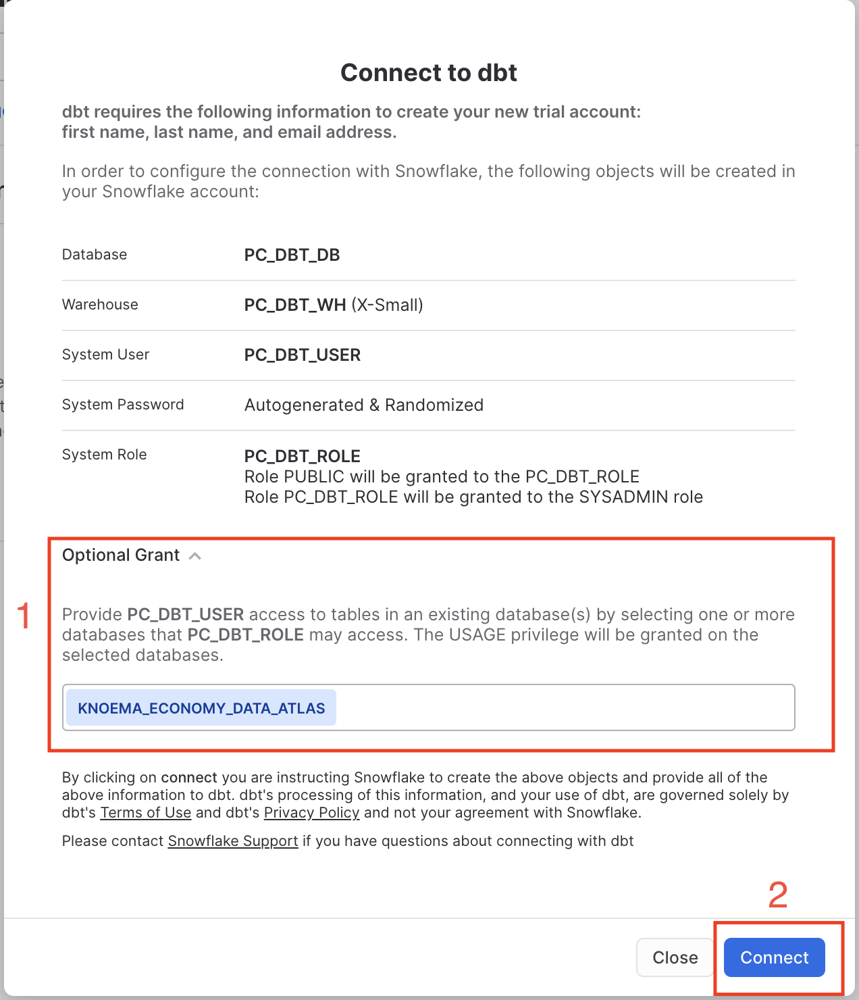
- When the popup that says "Your partner account has been created", click on activate.

- You should be redirected to a dbt Cloud registration page. Fill out the form. Make sure to save the password somewhere for login in the future.

- Click on Compete Registration. You should now be redirected to your dbt Cloud account, complete with a connection to your Snowflake account, a deployment and a development environment, and even a sample job.
To help you version control your dbt project, we have connected it to a managed repository, which means that dbt Labs will be hosting your repository for you. This will give you access to a git workflow without you having to create and host the repository yourself. You will not need to know git for this workshop; dbt Cloud will help guide you through the workflow. In the future, when you're developing your own project, feel free to use your own repository. This will allow you to play with features like Slim CI builds after this workshop.
- Now let's set up our dbt project. Click on the hamburger menu on the top left side and click on
Develop. This will spin up your IDE (Integrated Development Environment) where you will be developing your dbt Project.


- After the IDE loads, click
Initialize your projectto set up your dbt project. Once you click on it, dbt will generate our starter project with the core files and folders.
- You should see new files and folders created in your file tree. These are all the files and folders you will need for a dbt project. Take a look around, especially at the dbt_project.yml and what's in the models directory.
- Click
Commit. Enter a commit message, and then clickCommitagain to commit your work to your master branch.
 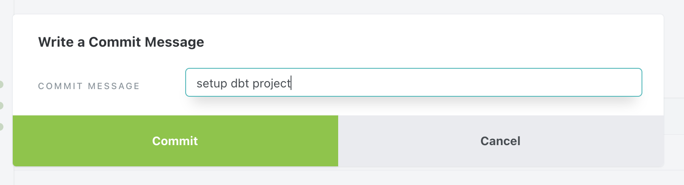
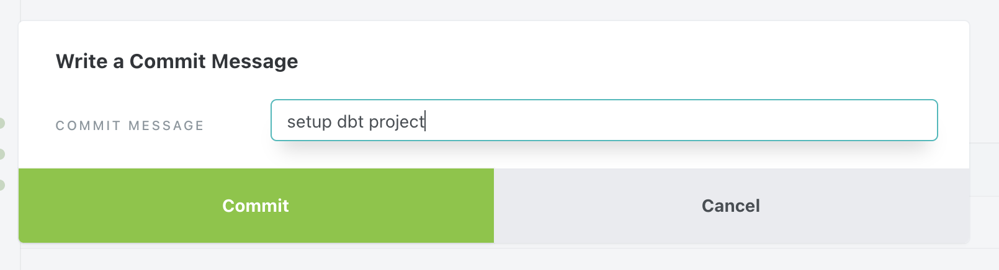
Commit messages should always be indicative of the work you are saving. This helps you create a reference point for the future in case of auditing and debugging. By committing, you are saving to a remote branch in Github. This will also be the only time you will save straight to your master branch (which is the main branch). We always want to create a degree of separation from development work and your production branch.
- Click
create new branchto check out a new git branch to start developing.
- Name the branch "dbt_snowflake_workshop" and click
Submit.
- UI walkthrough (SA will walk through during the workshop). Post workshop, users can look at this video for the walkthrough.
- Now let's validate that everything was initialized correctly by running the sample models that come with the starter dbt project.
- Type in
dbt runon the command line at the bottom, and clickEnter. The command line is where you will be entering in dbt commands to execute dbt actions.
If you want to see the actual code being executed, you can go into the ‘Details' tab next to Summary and look through the logs. Here you can see that dbt is writing the DDL for you, allowing you to focus on just writing the SQL select statement.

- The output should look like below, confirming dbt was able to connect to Snowflake and successfully execute the sample models in the models folder:

- If you want to see what is executed against Snowflake, click into one of the model tabs and click on details. You will see the log of the compiled code and how dbt interacted with Snowflake. Note that dbt by default built all of your models into this development schema made up of your first initial and last name. We will cover more environments later on.

- Now let's visually confirm the objects in Snowflake. Switch to the Snowflake UI (classic console) and refresh database objects. Expand the database
PC_DBT_WH. Then the development schema with your first initial and last name. And lastly Tables and Views. You should see the tableMY_FIRST_DBT_MODELand the viewMY_SECOND_DBT_MODEL.

Congratulations! You just ran your first dbt models on Snowflake!
We are going to start by adding a few more things to our dbt project configuration in order to improve maintainability.
- Let's add in some folders to follow our dimensional modeling structure. To learn more about how we structure our project, check out this discourse post. To add new folders, ghost over the models directory in the file tree and click on the ‘...' on the right next to the models directory. Click on "New Folder" and type into it "staging". Click "Create" after you finish typing and you should see a new folder in the file tree.


- Now that you've gotten one completed, let's go ahead and create three more folders. First create a folder named "knoema" in the staging model by clicking on the ‘...' next to the staging folder. This will be where we will put our staging models specific to our knoema source.
- Now for our last folders, we are actually going to create two folders at once. Click on the ‘...' next to models again. This time, we are going to fill the file path as "models/marts/core". This will create a new folder under models called marts and in it, a folder called core.
You should have a file tree that looks like this after completing this task.

- Next, let's update the dbt_project.yml file. This is a file that tells dbt that the repository is a dbt project as well as how to operate on your project. Click on the file
dbt_project.yml. The first thing we are going to do is update the project name from "my_new_project" to "<your_name>_dbt_workshop" at line 5. This will personalize the project a little, and make it yours.
Do not forget to save after you have updated the file! This means you will want to either click save or use cmd+s (mac)/ctrl+s(pc). The IDE will also warn you with the teal button on the tab.
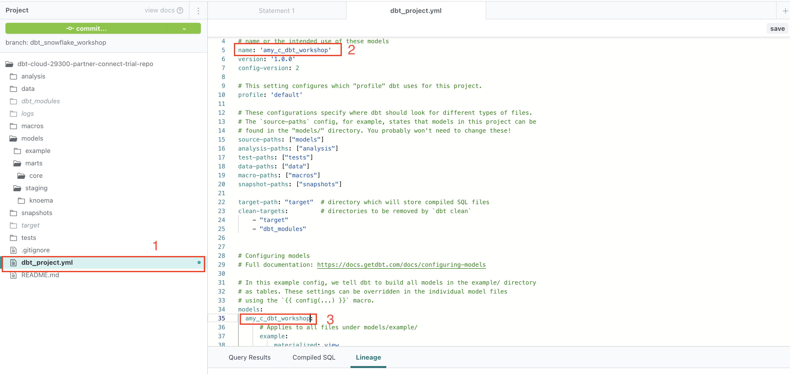
- Now let's update the models section in the file by declaring our new folders and their model configurations. We will be declaring the default schema that dbt builds the object into, the default materialization, and disabling any unnecessary models from a run. All of these configurations can be overridden by model configurations on the model file. If a schema is not declared via a configuration, dbt will build into the default schema declared on our development credentials.
Copy code below and paste into line 34 to line 38. Remember to replace <your_name>.
models:
<your_name>_dbt_workshop:
example:
schema: example
staging:
schema: staging
materialized: view
marts:
schema: marts
materialized: table
- Save the file.
- Be sure to click on "Commit" using the git command button (just in case your computer spontaneously explodes into a blob of smoke and melted plastic) to save your work. And supply a good commit message that conveys what you are saving!
- To better understand how schema names work in dbt, let's take a look at the standard macro that dbt uses to define what schema to build your object into. By default, dbt is generating a schema name by appending it to the target schema environment name(dev, prod). If you ever want to override this, you are going to create a new file in the macros folder named
generate_schema_name.sql.

- Copy and paste the below code into file generate_schema_name.sql to generate the macro.
{% macro generate_schema_name(custom_schema_name, node) -%}
{%- set default_schema = target.schema -%}
{%- if custom_schema_name is none -%}
{{ default_schema }}
{%- else -%}
{{ default_schema }}_{{ custom_schema_name | trim }}
{%- endif -%}
{%- endmacro %}

- Click Save
- To see this macro in action, do another
dbt runon the command line. Note how the schema has changed to be appending the custom schema name to our default schema per our macro. You can add in more conditionals to fit your own needs in terms of environment promotions.
In this workshop, we will show you how different configurations can easily change how and where your dbt project reads and writes from without needing you to change your code with code promotion.
Macros are a way to do this. Macros are written in a pythonic templating language called Jinja. Jinja allows you to do things that normally aren't possible in SQL such as create control structures (like if statements and for loops) or abstract away snippets of SQL into reusable functions applicable throughout your project. Jinja helps you write DRY code in a language that is generally wet.
In this generate_schema_name macro, we are defining what schema your objects should be built into based on the conditionals specified. Going through the macro, what is happening here:
{%- set default_schema = target.schema -%}
{%- if custom_schema_name is none -%}
{{ default_schema }}
Is that we are defining our default schema as the target database and schema defined for your development environment. The Partner Connect flow sets up our development environment to point to the partner connect created database and a schema made of your first initial and last name. You can verify this in your profile. However, if a custom schema is provided as we did in our dbt_project.yml file, dbt will build into a schema that is a concatenation of our default schema and the custom schema name due to this logic:
{%- else -%}
{{ default_schema }}_{{ custom_schema_name | trim }}
{%- endif -%}
All of this logic is defined in one place and will be applied on your project which makes it simple to scale up your project, especially as business needs arise.
Later on, we will learn how to use macros from a package and see how those macros help us write SQL quickly.
- Now we need to apply another operational macro. This time, this macro will add a query tag for every dbt run in the Snowflake history. To do this, we'll create a file in the "macros" folder called
query_tag.sql. - Copy and paste the following code. This provides the ability to add an additional level of transparency by automatically setting Snowflake query_tag to the name of the model it is associated with.
{% macro set_query_tag() -%}
{% set new_query_tag = model.name %} {# always use model name #}
{% if new_query_tag %}
{% set original_query_tag = get_current_query_tag() %}
{{ log("Setting query_tag to '" ~ new_query_tag ~ "'. Will reset to '" ~ original_query_tag ~ "' after materialization.") }}
{% do run_query("alter session set query_tag = '{}'".format(new_query_tag)) %}
{{ return(original_query_tag)}}
{% endif %}
{{ return(none)}}
{% endmacro %}
- Click "Save".

- Now, do a
dbt runagain on the command line. - To see where the query tags are applied, go to the Snowflake UI, click the "History" icon on top. You are going to see all the SQL queries you've run on your Snowflake account (successful, failed, running etc.). and clearly see which dbt model a particular query is related to.

Update the Filter to the user is PC_DBT_USER and the status is Succeeded to see the same view as the screenshot above, you can also remove extra columns by clicking on the arrow after hovering over a column, hovering over "Columns" and unchecking any columns you don't want.
- Now we are going to install a dbt package. A dbt package is essentially a dbt project that you can install onto your own dbt project to gain access to the code and use it as your own. Many of our packages are hosted on the dbt Packages Hub. In our lab, we are going to demonstrate how to use some useful macros in the dbt_utils package to write some complex SQL. To install it, create a file called
packages.ymlat the same level as yourdbt_project.ymlfile.
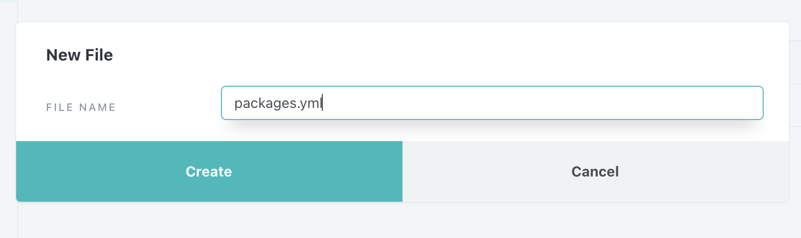
- Copy and paste the following code into file packages.yml.
packages:
- package: dbt-labs/dbt_utils
version: 0.8.0

- Click
Save. - Now we are going to install the package. By running
dbt deps, you tell dbt to install the packages. With a successful run, you can check out the dbt_modules folder to see what packages you have installed and the code that is now available to you.
- Last thing to do before we save our work. Remove the example subdirectory configuration in the
dbt_project.ymlfile and delete the example folder with the models in it. - Click
Committo commit your work!
Now we start to get into the fun stuff. In the next few sections, we are going to build our dbt pipelines. This will include transformations that define these these areas of interest:
- Stock trading history
- Currency exchange rates
- Trading books
- Profit & Loss calculation
Setting up our Sources
- Now let's head back to the dbt Cloud IDE. We are going to start building our pipelines by declaring our dbt sources. Create a
knoema_sources.ymlfile in the staging/knoema folder. - Paste in the following code.
version: 2
sources:
- name: knoema_economy_data_atlas
database: knoema_economy_data_atlas
schema: economy
tables:
- name: exratescc2018
- name: usindssp2020

As you might remember, these two objects were mentioned in the Knoema Dataset Catalog table: daily exchange rates and daily US trading history accordingly.
- Click
Commitand provide a good commit message like "set up knoema source file". We are going to keep building that muscle of saving your work as you develop.
Now we have defined the sources that we will be building our dbt models on top of. By declaring these, we are able to create lineage from our raw objects to our transformed objects and apply documentation and testing.
Setting up our Staging Models
- Now let's create staging models to clean up our raw objects. Staging models bear a one-to-one relationship with the source data table they represent. They have the same granularity, but the columns have been renamed, recast, or reconsidered in some way to follow a consistent, useful format. By creating these as the first level transformation, you can create a consistent foundation to build more complex transformations upon. To learn more, check out our discourse post. The first staging model we are going to make will be for exratescc2018. Create a new file in the staging/knoema folder named
stg_knoema_fx_rates.sql. - Paste the following select statement.
(To learn more about our recommendations around coding style, check out this repository.)
with source as (
select * from {{source('knoema_economy_data_atlas','exratescc2018') }}
),
renamed as (
select
"Currency" as currency,
"Currency Unit" as currency_unit,
"Frequency" as frequency,
"Date" as exchange_date,
"Value" as exchange_value,
"Indicator" as indicator,
"Indicator Name" as indicator_name,
'Knoema.FX Rates' as data_source_name
from source
)
select * from renamed
- Save the file. To check the query before executing the code against the warehouse, you can click on the
Previewbutton. You can also click onCompileto see the compiled code that will be executed.
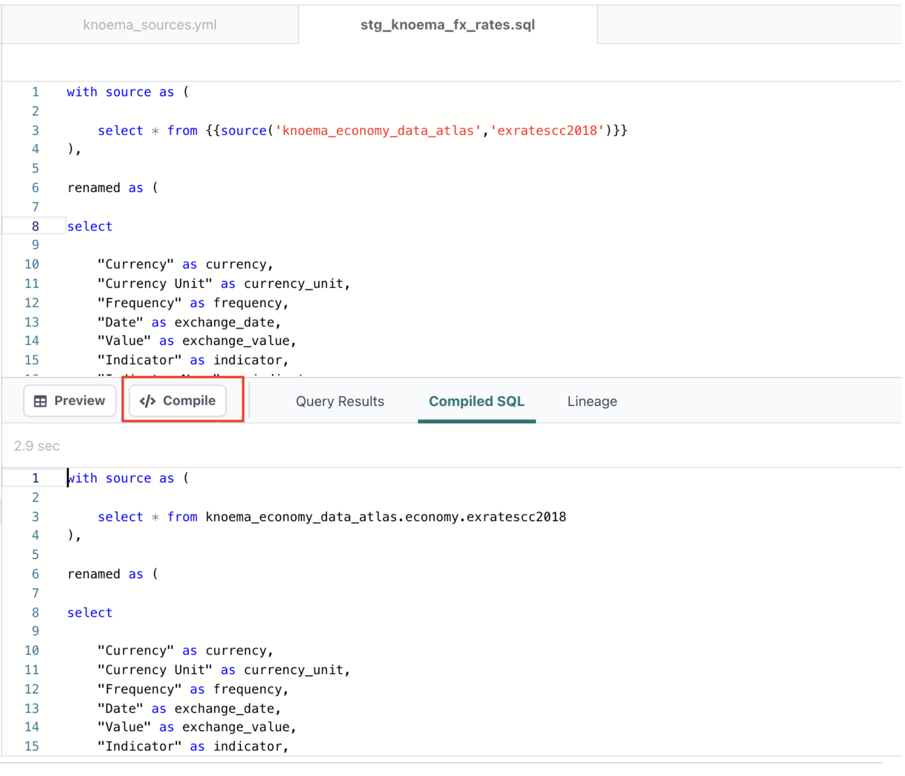
In the compiled code, you will notice that the source function ({{source(‘knoema_economy_data_atlas',‘exratescc2018')}}) compiles to the actual database object.
Let's talk more about this function:
Using the sources function allows you to:
- Tell dbt how a model relates to its source and then dynamically generate a DAG from this, as you can see in the lineage tab

- This also allows dbt to dynamically replace the sources with their target-specific name, whether it's from the configuration in sources.yml or from the environment. This allows you to promote the same code from dev to prod and any other environments without having to change the code. You can even use the target jinja function to conditionally point to different databases based on the declared target.
- Now to make the other staging model. Create the file in the same folder and name it
stg_knoema_stock_history.sql. - Paste in this code and save.
with source as (
select * from {{source('knoema_economy_data_atlas','usindssp2020')}}
),
renamed as (
select
"Company" as company,
"Company Name" as company_name,
"Company Ticker" as company_symbol,
"Stock Exchange" as stock_exchange,
"Stock Exchange Name" as stock_exchange_name,
"Indicator" as indicator,
"Indicator Name" as indicator_name,
"Units" as units,
"Scale" as scale,
"Frequency" as frequency,
"Date" as stock_date,
"Value" as stock_value,
'Knoema.Stock History' as data_source_name
from source
)
select * from renamed
- Now let's create these views in Snowflake. Since we only want to run the models in the staging folder, we are going to use the following command on the command line:
dbt run --select staging.*
This allows us to be selective and only run the models in the staging folder. Node selectors are very helpful in refining what we actually want to run and test.

- Once everything ran successfully, let's save our work to our remote branch. Click on
Commitand provide a good commit message like "set up staging models" - Now we can go and query this dataset to take a feel of what the data profile looks like. You can either put this query in the "Statement 1" tab or in Snowflake UI. Remember to change the schema name to the correct one for you.
select *
from pc_dbt_db.<dev_schema>_staging.stg_knoema_stock_history
where company_symbol ='AAPL'
and stock_date ='2021-03-01'

In this dataset, different measures like Close, Open, High and Low price are represented as different rows. For our use case, this is a bit suboptimal - it would be better to see that data transposed into columns; something more like this:
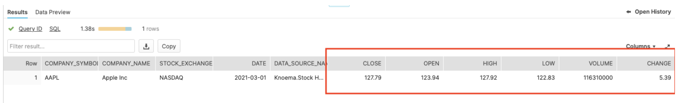
So let's do that!
Setting up our intermediate models
To achieve this, we are going to have to create a few more models:
- Now let's create a new intermediate model in the core folder. You can do this by clicking on
New File. Remove the prewritten path and paste in the following path: models/marts/core/intermediate/int_knoema_stock_history.sql

This will create the file as well as the intermediate folder in the core folder to organize the intermediate models.
Intermediate tables are transformations to get to the end data product but won't be queried in the downstream processes like in the BI layer.
- Paste this code in the model and click "Save". We are going to use the dbt_utils pivot macro to transpose the dataset from rows to columns. We have also nested in another dbt_utils macro called get_columns to help us list the column values dynamically.
- Paste this code in the model and save. We are going to use the dbt_utils pivot macro to transpose the dataset from rows to columns. We have also nested in another dbt_utils macro called get_columns to help us list the column values dynamically.
with stock_history as (
select * from {{ ref('stg_knoema_stock_history') }}
where indicator_name in ('Close', 'Open','High','Low', 'Volume', 'Change %')
),
pivoted as (
select
company_symbol,
company_name,
stock_exchange_name,
stock_date,
data_source_name,
{{ dbt_utils.pivot(
column = 'indicator_name',
values = dbt_utils.get_column_values(ref('stg_knoema_stock_history'), 'indicator_name'),
then_value = 'stock_value'
) }}
from stock_history
group by company_symbol, company_name, stock_exchange_name, stock_date, data_source_name
)
select * from pivoted
- Now let's see what dbt_utils pivot macro compiles to by clicking on the compile button.

- Now let's see what happens if you don't have the dbt_utils macro to help you write the code. Create a new file in the same intermediate folder:
int_knoema_stock_history_alt.sql - Paste below content into the new file and click "Save". In this model, we will use Snowflake's pivot function.
with stock_history as (
select * from {{ ref('stg_knoema_stock_history') }}
where indicator_name IN ('Close', 'Open','High','Low', 'Volume', 'Change %')
),
pivoted as (
select * from stock_history
pivot(sum(stock_value) for indicator_name in ('Close', 'Open','High','Low', 'Volume', 'Change %')
) as
p(
company_symbol,
company_name,
stock_exchange_name,
stock_date,
data_source_name,
close,
open,
high,
low,
volume,change
)
)
select * from pivoted
What did you think of the difference? While both models create the same end result, the dbt_utils.pivot macro requires less code and less brainpower. All you had to do is fill in the columns and the model to obtain the same end result. It is also more dynamic, automatically updating at compilation if a new value appears.
You might have also noticed that in these models we are using a function called ref. This ref function is very similar to sources function but rather than telling dbt how a model relates to a source declared in the sources.yml file, the ref function tells dbt how a model relates to another model. It's useful in the same reasons as sources():
- You will be able to automatically generate a DAG and promote your code through environments without having to update the code to change the database object.
- Refs also allow you to run based on dependencies as you will see below.
The main takeaway to remember is in a dbt project, you should never have to hardcode a database object. Always uses sources() and refs()
- Now let's go ahead and create the new models in Snowflake. In this case, rather than running based on the model file, we will run based on dependencies. Run the following command to execute the int_knoema_stock_history model and its parent models.
dbt run --select +int_knoema_stock_history
You should see that we have run all of the nodes (excluding sources) to the left of this lineage.


- Execute the below code, either in the Snowflake UI or in the dbt Cloud IDE
SELECT *
FROM pc_dbt_db.<dev_schema>_marts.int_knoema_stock_history
WHERE company_symbol = 'AAPL'
AND stock_date = '2021-03-01'
Looks like we have what we wanted!
Now let's take a look at our exchange rates and create some intermediate tables on top of them.
- Create a file called
int_fx_rates.sqlin the intermediate folder (models/marts/core/intermediate/int_fx_rates.sql).
{{
config(
materialized='view',
tags=["hourly"]
)
}}
select * from {{ ref('stg_knoema_fx_rates') }}
where indicator_name = 'Close'
and frequency = 'D'
and exchange_date > '2016-01-01'
There's now a model configuration on top of our model. dbt offers various materialization options. By default, if a materialization is not declared, the model will be created as a view. For this directory (marts) that the model is nested in, we have configured in our dbt_project.yml that the default materialization is table. We will override the project level materialization with our model configuration, declaring the model to be materialized as a view. We also include a tag. Tags can be used to run parts of your project or a good way to group your models based on content and intent.
- Let's try running this model based on a tag. In the command line, run :
dbt run --select tag:hourly
Being able to run models based on tags can be helpful for, say, an hourly job where you are selectively running specific models.
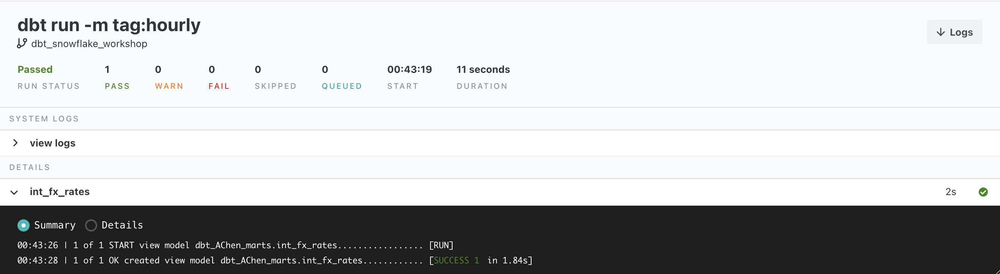
- Now create the file
int_stock_history_major_currency.sqlin the intermediate folder. This model will start bringing FX and Trade history sets together. - Paste the below code into the file and save it.
with
stock_history as (
select * from {{ ref('int_knoema_stock_history')}}
),
fx_rates as (
select * from {{ ref('int_fx_rates') }}
),
fx_rates_gdp as (
select * from fx_rates
where currency = 'USD/GBP'
),
fx_rates_eur as (
select * from fx_rates
where currency = 'USD/EUR'
),
joined as (
select
stock_history.*,
fx_rates_gdp.exchange_value * stock_history."Open" as gbp_open,
fx_rates_gdp.exchange_value * stock_history."High" as gbp_high,
fx_rates_gdp.exchange_value * stock_history."Low" as gbp_low,
fx_rates_gdp.exchange_value * stock_history."Close" as gbp_close,
fx_rates_eur.exchange_value * stock_history."Open" as eur_open,
fx_rates_eur.exchange_value * stock_history."High" as eur_high,
fx_rates_eur.exchange_value *stock_history."Low" as eur_low,
fx_rates_eur.exchange_value * stock_history."Close" as eur_close
from stock_history
left join fx_rates_gdp on stock_history.stock_date = fx_rates_gdp.exchange_date
left join fx_rates_eur on stock_history.stock_date = fx_rates_eur.exchange_date
)
select * from joined
- Now, let's deploy newly built models by typing the following into the command line.
dbt run --select +int_stock_history_major_currency

Generate Documentation Site
Now that we have created a few models, let's talk about dbt documentation. dbt is able to generate a static webpage with a data dictionary by pulling in information from your dbt project as well as your Snowflake information_schema. It also provides an interactive DAG so you can see the full lineage of your models; this is something you might have also noticed in the lineage tab of the IDE. This is a fantastic way to share information with your internal teams, as it contains all-important information about columns, tags, free-form model description, tests as well as the source code that is always in line with the code. So regardless of how big your project grows, it is super easy to understand what's happening with the help of dbt's documentation.
- To generate your documentation site, execute "dbt docs generate" on the command line:
dbt docs generate
- Click on
View Docson the top left side.
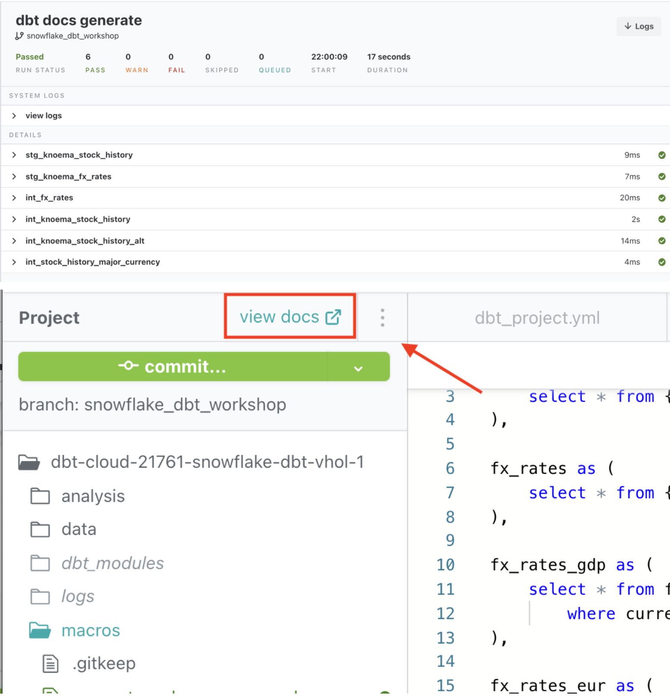
- Take a look around on the docs site. You can check out the project lineage by clicking on the DAG button on the bottom. Explore the page and think about what information you would want to provide to your stakeholders and teammates.

Following our use case story, we are going to manually upload two small datasets using dbt seed representing trading books of two desks. As you might notice, they were buying and selling AAPL shares, but logging the cash paid/received in different currencies: USD and GBP.
- Create a new file in the data folder called
manual_book1.csv.
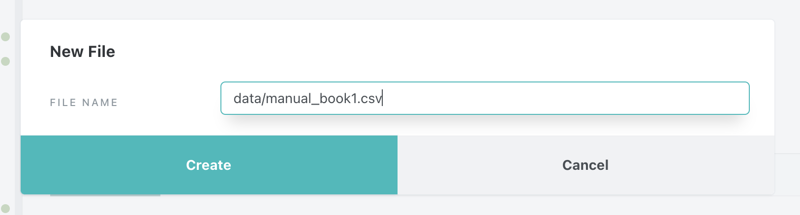
- Paste the following code in the file and save it.
Book,Date,Trader,Instrument,Action,Cost,Currency,Volume,Cost_Per_Share,Stock_exchange_name
B2020SW1,2021-03-03,Jeff A.,AAPL,BUY,-17420,GBP,200,87.1,NASDAQ
B2020SW1,2021-03-03,Jeff A.,AAPL,BUY,-320050,GBP,3700,86.5,NASDAQ
B2020SW1,2021-01-26,Jeff A.,AAPL,SELL,52500,GBP,-500,105,NASDAQ
B2020SW1,2021-01-22,Jeff A.,AAPL,BUY,-100940,GBP,980,103,NASDAQ
B2020SW1,2021-01-22,Nick Z.,AAPL,SELL,5150,GBP,-50,103,NASDAQ
B2020SW1,2019-08-31,Nick Z.,AAPL,BUY,-9800,GBP,100,98,NASDAQ
B2020SW1,2019-08-31,Nick Z.,AAPL,BUY,-1000,GBP,50,103,NASDAQ
- Create another file
manual_book2.csvin the data folder. - Paste the following code in the file and save it.
Book,Date,Trader,Instrument,Action,Cost,Currency,Volume,Cost_Per_Share,Stock_exchange_name
B-EM1,2021-03-03,Tina M.,AAPL,BUY,-17420,EUR,200,87.1,NASDAQ
B-EM1,2021-03-03,Tina M.,AAPL,BUY,-320050,EUR,3700,86.5,NASDAQ
B-EM1,2021-01-22,Tina M.,AAPL,BUY,-100940,EUR,980,103,NASDAQ
B-EM1,2021-01-22,Tina M.,AAPL,BUY,-100940,EUR,980,103,NASDAQ
B-EM1,2019-08-31,Tina M.,AAPL,BUY,-9800,EUR,100,98,NASDAQ
- Now let's run the
dbt seedcommand to load the data into Snowflake. It is important to mention that while it is absolutely possible with this approach to bring low hundred-thousands of rows, it was not created for larger datasets and you should be using COPY/Snowpipe or other data integration options recommended for Snowflake in such cases.
dbt seed
You can see that it loaded the files in the default schema because we didn't declare a schema for them. If we wanted to make sure the files were loaded into a specific file, we could go back to the dbt_project.yml and add that schema configuration.

- Commit your work.
- Now let's model the seeded data by unioning them together. In this example we are going to see how dbt_utils.union_relations macro helps us write the necessary code. Create the file
int_unioned_book.sqlin the intermediate folder. - Paste the code below into the new file and save it.
with
unioned as (
{{ dbt_utils.union_relations(
relations=[ref('manual_book1'), ref('manual_book2')]
) }}
),
renamed as (
select
Book,
Date as book_date,
Trader,
Instrument,
Action as book_action,
Cost,
Currency,
Volume,
Cost_Per_Share,
Stock_exchange_name
from unioned
)
select * from renamed
- Before we deploy this model, let's have a look at what it is compiled into. You can do this by clicking on the compile button.

As you can see, the macro from the dbt_utils package wrote the code, aligned the attributes by name and type, and combined the datasets via a UNION ALL. The beauty of this is, we were able to write 46 lines of code with only 3. It's also dynamic so if we were to add new columns to our referenced models, dbt would update the compile code with the new fields. You can imagine the amount of time saved.
- Now let's create the object by running:
dbt run --select int_unioned_book
- Next challenge! We have a great log of trading activities, but it only provides records when shares were bought or sold. Ideally, to make the daily performance analysis more meaningful, we should have rows for the days shares were held as well. To do this, let's make this new file:
int_daily_position.sqlin the intermediate folder. - Paste below into the new file and save it.
with
stock_history as (
select * from {{ ref('int_stock_history_major_currency') }}
),
unioned_book as (
select * from {{ ref('int_unioned_book') }}
),
cst_market_days as (
select distinct stock_date
from stock_history
where stock_history.stock_date >= (select min(book_date) as min_dt from unioned_book)
),
joined as (
select
cst_market_days.stock_date,
unioned_book.trader,
unioned_book.stock_exchange_name,
unioned_book.instrument,
unioned_book.book,
unioned_book.currency,
sum(unioned_book.volume) as total_shares
from cst_market_days
inner join unioned_book on unioned_book.book_date = cst_market_days.stock_date
where unioned_book.book_date <= cst_market_days.stock_date
{{ dbt_utils.group_by(6) }}
)
select * from joined
You might have noticed we used another dbt_utils macro. Rather than having to manually list out all of the columns to group by, you can use the dbt_utils group_by macro to write it for you.
- Now let's group the daily position with trades. Create the file
int_daily_position_with_trades.sqlin the intermediate folder. - Paste the following code in the new file and save it.
with unioned_book as (
select * from {{ ref('int_unioned_book') }}
),
daily_position as (
select * from {{ ref('int_daily_position') }}
),
unioned as (
select
book,
book_date,
trader,
instrument,
book_action,
cost,
currency,
volume,
cost_per_share,
stock_exchange_name,
sum(unioned_book.volume)
over(
partition by
instrument,
stock_exchange_name,
trader
order by
unioned_book.book_date rows unbounded preceding)
as total_shares
from unioned_book
union all
select
book,
stock_date as book_date,
trader,
instrument,
'HOLD' as book_action,
0 as cost,
currency,
0 as volume,
0 as cost_per_share,
stock_exchange_name,
total_shares
from daily_position
where (book_date,trader,instrument,book,stock_exchange_name)
not in
(select book_date,trader,instrument,book,stock_exchange_name
from unioned_book
)
)
select * from unioned
- Execute the following code to build int_unioned_book and it's child models.
dbt run --select int_unioned_book+
Now that we have created all of these models, we are able to attribute shares by trader.

- Commit the work.
- Run the following code in either the dbt Cloud IDE or a Snowflake worksheet.
select *
from pc_dbt_db.<dev_schema>_marts.int_daily_position_with_trades
where trader = 'Tina M.'
order by book_date
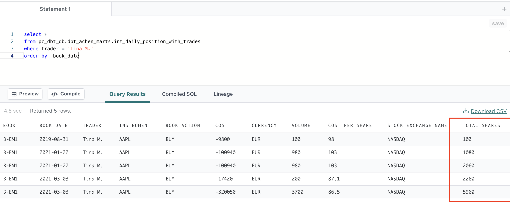
dbt pipelines - PnL calculation
Now for the last models in our tale. We have the trading history of our desks and our stock price history.
Let's create a model to show how Market Value and PnL changed over time. You might notice that this is going into our core folder. This is because this is a part of the core logic of our fictional company. This model will be a source of truth, to be used by many in downstream processes like a BI tool.
- Create the file
fct_trading_pnl.sqlin the core folder. - Copy the following code to the new file and save it.
{{
config(
tags = 'core'
)
}}
with
daily_positions as (
select * from {{ ref('int_daily_position_with_trades' )}}
),
stock_history as (
select * from {{ ref('int_stock_history_major_currency') }}
),
joined as (
select
daily_positions.instrument,
daily_positions.stock_exchange_name,
daily_positions.book_date,
daily_positions.trader,
daily_positions.volume,
daily_positions.cost,
daily_positions.cost_per_share,
daily_positions.currency,
sum(cost) over(
partition by
daily_positions.instrument,
daily_positions.stock_exchange_name,
trader
order by
daily_positions.book_date rows unbounded preceding
)
as cash_cumulative,
case when daily_positions.currency = 'GBP' then gbp_close
when daily_positions.currency = 'EUR' then eur_close
else 'Close'
end AS close_price_matching_ccy,
daily_positions.total_shares * close_price_matching_ccy as market_value,
daily_positions.total_shares * close_price_matching_ccy + cash_cumulative as PnL
from daily_positions
inner join stock_history
on daily_positions.instrument = stock_history.company_symbol
and stock_history.stock_date = daily_positions.book_date
and daily_positions.stock_exchange_name = stock_history.stock_exchange_name
)
select * from joined
- Run the model with
dbt run --select fct_trading_pnl.sql
You might have noticed that fct_trading_pnl takes some time to build when you do a dbt run. As we use larger and larger datasets, the run times are getting longer. We have already materialized our models as a table, meaning we are preemptively front loading our run times to save on the query times when the table is queried. We could always increase our warehouse size, but there's another trick up our sleeve we won't touch on just yet.
We can materialize the model as an incremental model, meaning that it will not be rebuilt each time, but rather only the latest rows transformed and added to the existing table. All you have to do is update the model configuration and include the is_incremental macro which comes into action for the incremental runs (and is ignored during initial run and full_refresh option). You can learn more about this incremental materialization here.
- Let's try out an incremental model. Create a new file
fct_trading_pnl_incremental.sqlin the core folder. - Copy the following code to the new file and save it.
{{
config(
materialized='incremental',
unique_key= 'pk_key',
tags = 'core'
)
}}
with
daily_positions as (
select * from {{ ref('int_daily_position_with_trades' )}}
),
stock_history as (
select * from {{ ref('int_stock_history_major_currency') }}
),
joined as (
select
daily_positions.instrument,
daily_positions.stock_exchange_name,
daily_positions.book_date,
daily_positions.trader,
daily_positions.volume,
daily_positions.cost,
daily_positions.cost_per_share,
daily_positions.currency,
sum(cost) over(
partition by
daily_positions.instrument,
daily_positions.stock_exchange_name,
trader
order by
daily_positions.book_date rows unbounded preceding
)
as cash_cumulative,
case when daily_positions.currency = 'GBP' then gbp_close
when daily_positions.currency = 'EUR' then eur_close
else 'Close'
end as close_price_matching_ccy,
daily_positions.total_shares * close_price_matching_ccy as market_value,
daily_positions.total_shares * close_price_matching_ccy + cash_cumulative as PnL
from daily_positions
inner join stock_history
on daily_positions.instrument = stock_history.company_symbol
and stock_history.stock_date = daily_positions.book_date
and daily_positions.stock_exchange_name = stock_history.stock_exchange_name
),
primary_key as (
select
{{ dbt_utils.surrogate_key([
'trader',
'instrument',
'book_date',
'stock_exchange_name',
'PnL',
]) }} as pk_key,
*
from joined
)
select * from primary_key
{% if is_incremental() %}
-- this filter will only be applied on an incremental run
where book_date > (select max(book_date) from {{ this }})
{% endif %}
- Now let's see how differently this model acts in the first run versus subsequent runs. Run
dbt run --select fct_trading_pnl_incrementaltwice and compare the logs.
For the first run, you will notice that the where clause does not come in into the sql statement.
In subsequent runs, dbt is including the where clause to create a temporary table to then merge into the existing table. The first run of an incremental model will builds the table that will then new rows will be added to in subsequent runs.
First run: 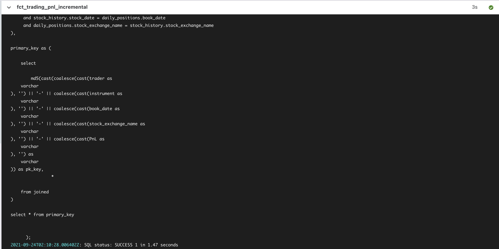
Second run: 
You will not see a true performance improvement in this example because our data is not loading exponentially but in production applications, you will.
Testing & Documentation
To build trust in data with your organization, it is impossible to overstate the importance of testing and documentation. While there are many ways to organize automated testing and documentation, dbt comes with an accessible data testing and documentation framework.
For tests, dbt comes with a set of 4 pre-defined data tests:
- uniqueness
- not_null
- check constraints
- relationship integrity
We are going to set up tests on a few models for this workshop. However, we strongly recommend you establish reasonable test coverage across the board. Adding your own tests is easy; as long as it can be written as a select statement, you can use it as a test. And just like with macros, there are plenty of fantastic packages out there like the dbt_expectations package that provides tests similar to the Great Expectations open source project.
For documentation, dbt takes model and column descriptions and will add them to the documentation site so that you have even more information about your models to share with your stakeholders via the site. It also pulls in information from the Snowflake information schema for a one stop show about your data project.
Now let's add testing and documentation to this project.
- First, create this file
intermediate.ymlin the intermediate folder. - Copy the following code into the new file and save it.
version: 2
models:
- name: int_fx_rates
description: "An intermediate model that filters stg_knoema_fx_rates"
columns:
- name: currency||exchange_date
tests:
- unique
- not_null
- name: int_unioned_book
description: "An intermediate model unions the manual_book csvs"
columns:
- name: instrument
tests:
- not_null
- relationships:
to: ref('int_knoema_stock_history')
field: company_symbol
- name: int_knoema_stock_history
description: "An intermediate model that pivots the stg_knoema_stock_history model by indicator"
columns:
- name: company_symbol||stock_date
tests:
- not_null
- unique

- Execute the following code on the command line:
dbt test

Oh no! One of our tests failed! Let's try to understand why. If you click into the details tab, dbt provides you with the SQL query that failed.
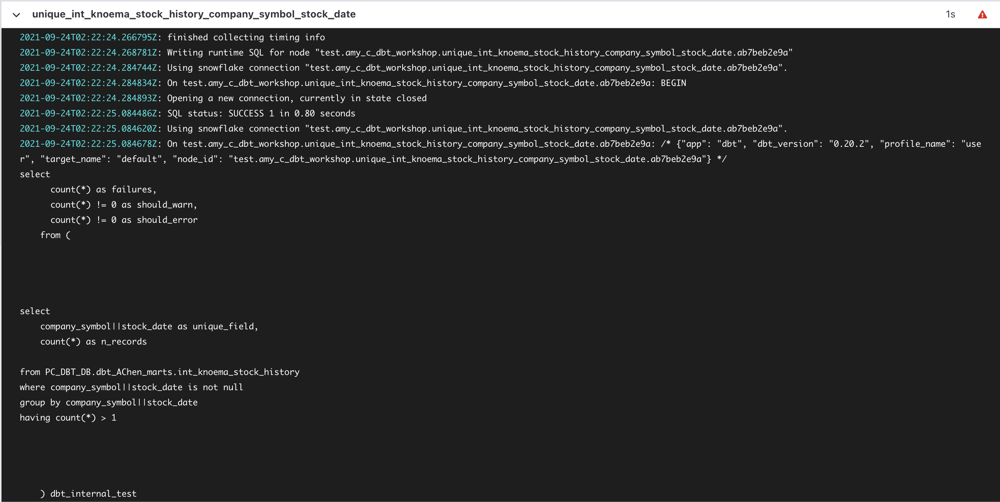
Now let's take that query and paste it either into the Snowflake UI or the IDE to debug it.
- Execute the following query to check the full row width for one of the records failed either in the IDE or the Snowflake UI (remember to update the dev_schema!):
with cst as
(
select
company_symbol||stock_date as conctat
from <dev_schema>_marts.int_knoema_stock_history
where company_symbol||stock_date is not null
group by company_symbol||stock_date
having count(*) > 1
limit 1
)
select * from <dev_schema>_marts.int_knoema_stock_history
where company_symbol||stock_date IN (SELECT conctat FROM cst)

Aha! There are shares which are traded on more than one stock exchanges. So we need to include the stock_exchange_name attribute to the unique test key.
- Let's go back to
intemediate.ymlfile and update the test configuration for int_knoema_stock_history model :
version: 2
models:
- name: int_fx_rates
description: "An intermediate model that filters stg_knoema_fx_rates"
columns:
- name: currency||exchange_date
tests:
- unique
- not_null
- name: int_unioned_book
description: "An intermediate model unions the manual_book csvs"
columns:
- name: instrument
tests:
- not_null
- relationships:
to: ref('int_stock_history')
field: company_symbol
- name: int_knoema_stock_history
description: "An intermediate model that pivots the stg_knoema_stock_history model by indicator"
columns:
- name: company_symbol||stock_date||stock_exchange_name
tests:
- not_null
- unique
- Now let's run only the previously failing test.
dbt test -m int_knoema_stock_history

Look at all that green! Now the last thing to do is to generate the documentation and see how our description fields are populated.
- Run the command
dbt docs generateand click on view docs. - Search for one of the models that we applied descriptions to either via the file tree or the search bar.
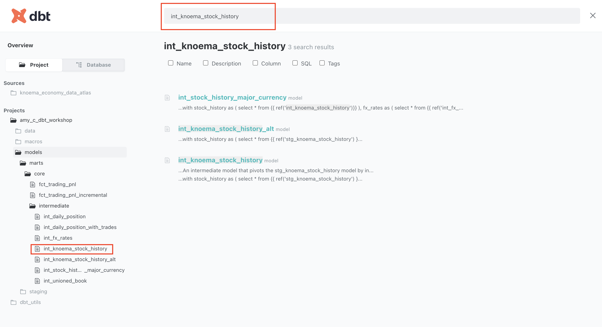
You should now see the description field populated.

Okay, it seems like we have everything in place: pipelines have been developed, tested and documented.
The next step would be to promote this code up the chain through our environments (which in this lab are simplified to just DEV & PROD). We'll do this by committing the work to our feature branch into the main branch and setting up a job to orchestrate the execution of the models in production. Generally it would be best for a pull request to be opened, so that your code is reviewed and tested via Slim CI prior to promotion to production, but in the interest of keeping things concise for this workshop, we are going to merge into production without review.
- To do this, the first thing you are going to do is commit any remaining work you haven't yet.

- Now we are going to click merge to master

By merging into master, you should have reverted back to your master branch for you to start the cycle over again for development.

- Now we are going to deploy our code via dbt Cloud. Luckily for you, Partner Connection has already created your Production Environment for you. Now all we have to do is update some defaults.
Click on the hamburger menu and click on Environments.


You should see two different Environments: Development and Deployment.
- Click on the
Deploymentenvironment and then click onSettingsin the top right.


- We are going to update the schema name from your development schema to
production. To do this, click on Edit.

- After you update the field, be sure to click on
Saveat the top. Now in doing this, dbt will default to building in a schema namedproductionin the declared default database pc_dbt_db. This helps us separate out the objects we create in our production environment from our development sandbox. - After saving your environment, let's update the default Partner Connect created job. To do this, click on the hamburger menu on the top left and click on
Jobs.

- Now select the pre-configured job named
Partner Connect Trial Job. - Now let's edit it by first going to
Settings. - Click on
Editon the top right. - And now we are going to update a few things. Change the name of the Job to
Production Jobto signify that this is going to be your production run. Update the number of threads to 8. This will allow dbt to run 8 dbt models in the DAG concurrently sans dependencies. 8 is the default we recommend for Snowflake.

- Because the dbt commands section already include the sequence of commands that we need things to operate, we are going to keep it as is. We want to seed our manual uploads to our production schema first. Then we want to create our objects in our schema prior to running tests on them. We are also going to leave the scheduling on it's default off configuration because we will be manually kicking off the job for this workshop.
- Now go to the top and click
Save. - Then click on the job name in the path on top. This will return you to the job run history page, from where you can click on
Run now. - Click into the run to check out how the run is going. Your run should be successful like this after completion.

- Take a look at the various run steps. You can validate that on the dbt run step, you are building into the prod schemas as noted in our environment configuration.
- Verify in Snowflake UI that you now we have data in the production schema:
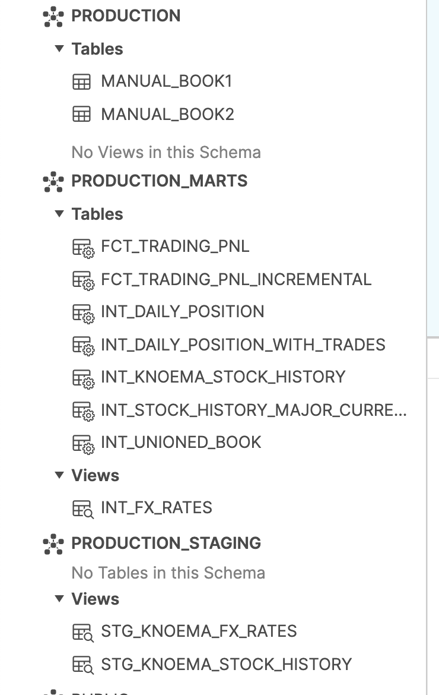
And this concludes our workshop! If you're interested in exploring further, there are "extra credit" tasks in the appendix of this workshop, in which you'll cover things like how to visualize what you've created with Snowsight.
Congratulations on completing the lab!
Today, you learned how to use dbt and Snowflake to build data transformation pipelines for analytics. You're now ready to apply these fundamentals to your own data. We encourage you to continue with your free trial by loading your own sample or production data, and by continuing to dive into some of the more advanced functionality of dbt Cloud and Snowflake.
What we've covered:
- How to set up dbt & Snowflake
- How to leverage data in Snowflake's Data Marketplace
- How to run a dbt project and develop pipelines
- How to create data tests and documentation
Additional Resources:
- Join our dbt community Slack which contains more than 18,000 data practitioners today. We have a dedicated slack channel #db-snowflake to Snowflake related content.
- To continue to learn to use dbt more effectively, check out the dbt Learn site.
- Contact the dbt Cloud Sales team if you're interested in exploring dbt Cloud for your team or organization.
Visualizations
- If you want to create a simple data visualization for this dataset, we can use Snowsight. To do that, let's click on the Preview App button once again:
- Enable the Dashboards and worksheets.
- Then click Worksheets -> + Worksheet to add a new one.
- Copy and paste the following query in the worksheet.
select *
from pc_dbt_db.<dev_schema>_marts.int_daily_position_with_trades
where trader = 'Tina M.'
order by book_date
- Hit the run button and switch from a table view to chart.
- By default it shows a breakdown by Volume. Click on the measure and switch it into PNL.
- Click "+Add column" to add another measure and select "Market Value" to display Market value and PnL side by side.
And that's it! Now you have a worksheet that you can slice and dice, share with your colleagues or embed in the SnowSight dashboard as a tile. For more details on SnowSight, please refer to the Snowflake documentation.